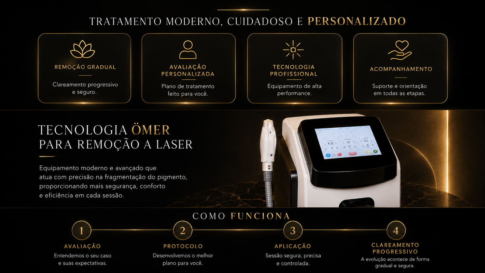

Remocao gradual
Clareamento progressivo, respeitando a resposta da pele.
Remocao de tatuagens a laser
Tecnologia avancada para clareamento progressivo, com seguranca, conforto e acompanhamento profissional em cada etapa.
Nova fase
Seu corpo muda. Seus planos mudam. E tudo bem querer se sentir bem na propria pele. Aqui, o processo e planejado com criterio, cuidado e expectativa realista.
Experiencia premium
Clareamento progressivo, respeitando a resposta da pele.
Analise do pigmento, profundidade, area e objetivo final.
Equipamento de alta performance para aplicacao controlada.
Orientacoes antes, durante e depois de cada sessao.
Tecnologia profissional
O laser atua na fragmentacao do pigmento para que o organismo responda gradualmente ao tratamento. Cada caso recebe um plano proprio, com parametros definidos em avaliacao.

Como funciona
Entendemos o seu caso, sua pele e suas expectativas.
Definimos o planejamento mais adequado para o objetivo.
Sessao precisa, controlada e acompanhada por profissional.
O clareamento acontece progressivamente, sessao apos sessao.
Resultados com evolucao
Fisiolaser Manaus
Agende sua avaliacao e descubra o plano ideal para o seu caso.
Agendar minha avaliacao